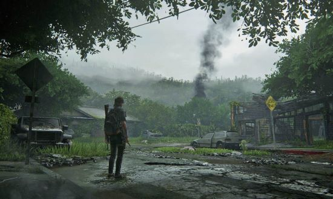
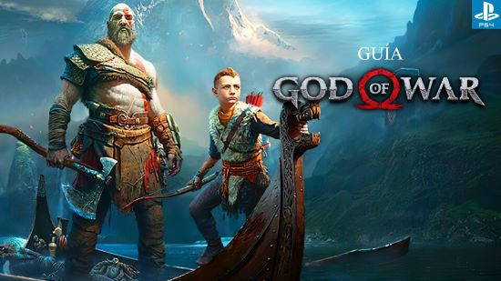
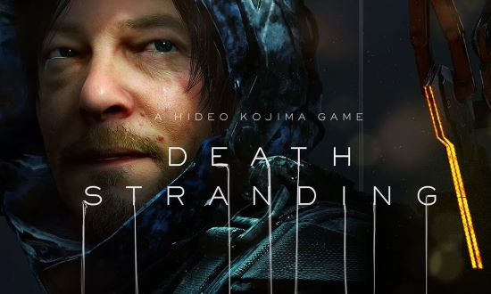
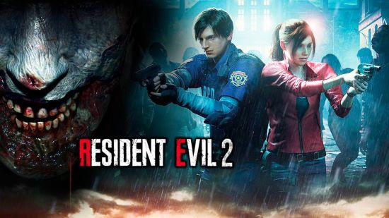
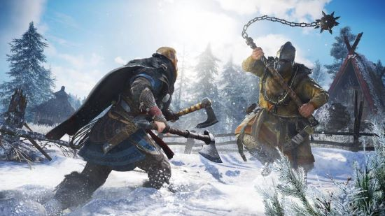
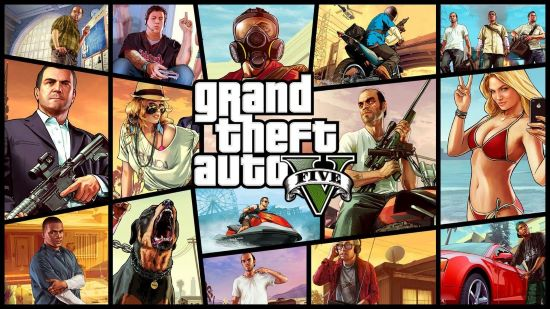
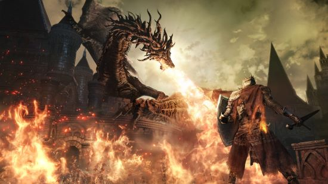
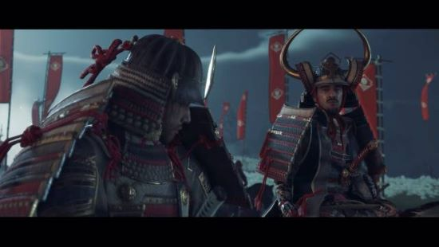
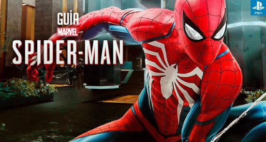
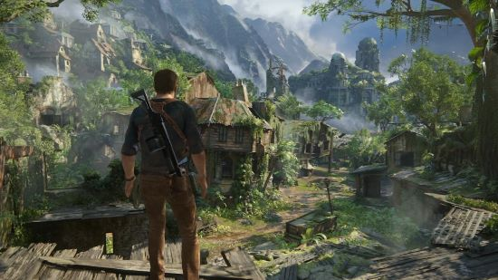

Estos Son Los 10 Mejores Juegos:
The Last Of Us Parte II
Naughty Dog se propuso continuar la historia de su juego más aclamado y el resultado fue The Last of Us Parte II, una segunda entrega que cambia los papeles y nos pone en la piel de Ellie en una trama que gira alrededor de la venganza y sus consecuencias. Sobrecogedor en lo técnico, brillante en lo jugable y tremendamente arriesgado en lo narrativo, The Last of Us Parte II es uno de esos juego que pretende remover conciencias. Y vaya que si lo hizo.
God Of War
God of War es una obra maestra, en que cada aspecto individual del juego se combina para completar una aventura violenta, conmovedora e inolvidable, cuya ambientación nórdica nos ha conquistado. Su único punto débil es esa sensación de que lo mejor está por llegar en próximas entregas... Pero no cabe duda de que God of War es uno de los juegos imprescindibles de PS4.
Death Stranding
Hideo Kojima, creador de la saga Metal Gear, nos propone una aventura atípica que trata sobre conectar en diferentes sentidos: conectar con otras personas en un mundo al borde de la extinción, conectar con otros jugadores en el modo online asíncrono y conectar con nuestro pasado. Death Stranding es una obra de arte, uno de los mejores juegos actuales de PS4, que brilla tanto en su ejecución técnica como en historia y planteamiento. Mención especial para la interpretación de actores como Norman Reedus (Sam Porter Bridges) y Mads Mikkelsen (Cliff Unger).
Resident Evil 2 Remake
Si el Resident Evil 2 original de PSX ya era bueno, este "remake" resulta espectacular. Sin duda se trata de uno de los mejores juegos de PS4, que sabe aprovechar la historia clásica; el encuentro del policía novato Leon S. Kennedy y Claire Redfield en la ciudad de Raccoon infestada de zombies, y que le dota del "barniz" de un gameplay actualizado y un apartado técnico puntero. Resident Evil 2 Remake recupera las dos historias paralelas, las persecuciones de Mr. X y la aterradora aparición del Licker, y los moderniza de un modo impecable.
Assassin's Creed: Valhalla
Esta última entrega refina todos esos cambios y finaliza el proceso de conversión al género action RPG, y lo hace todo aún más interesante gracias a una ambientación vikinga que le sienta como una hoja oculta al brazo del asesino. En definitiva: Assassin's Creed Valhalla es una de las mejores entregas de la saga AC, y uno de los mejores juegos de PS4 (y PS5, puesto que es intergeneracional).
GTA V
Las remasterizaciones, cuando se hacen bien, son motivo de celebración. Y es es precisamente el caso de GTA V, que además de mostrar un apartado gráfico muy superior a las versiones de PS3 y Xbox 360, añadió gran cantidad de contenidos nuevos, entre los que destaca el modo en primera persona. Así no hay quien se resista a volver a Los Santos.
Dark Souls III
Dark Souls III es el Dark Souls que se vio 4 años antes, pero perfeccionado en todos los sentidos. Desafiante, muy gratificante y, sobre todo, sorprendente a pesar de apoyarse sobre unos cimientos muy familiares. ¡Bendito seas, Miyazaki! Eso sí, tened en cuenta que su dificultad puede no ser para todo el mundo. Pero, ¿somos jugadores o somos gallinas?
Ghost Of Tsushima
Llega acompañado de la etiqueta de ser "el último gran exclusivo de PS4". Sucker Punch, desarrolladores de las sagas Infamous o Sly Cooper, aborda su desarrollo más ambicioso: un sandbox ambientado en la era de los samurais. Nos trasladamos al siglo XIII, durante la invasión de los mongoles a la isla de Tsushima, en Japón, y encarnamos a Jin Sakai, uno de los últimos guerreros capaces de hacer frente al invasor.
Marvel's Spiderman
Con la fuerza, velocidad y agilidad proporcionales de una araña, Insomniac Games trae a Spiderman para PS4, con un juego que no inventa la telaraña, pero que sobresale en todo lo que se propone. Marvel's Spider-Man es asombroso, espectacular, sensacional y superior a cualquier otro juego del trepamuros.
Uncharted 4 El Desenlace Del Ladrón
Nathan Drake vive su última gran aventura en mejor estado de forma que nunca. Los chicos de Naughty Dog han conseguido sorprendernos de nuevo con este Uncharted 4 El Desenlace del Ladrón demostrando que son capaces de crear el mejor juego de PS4 que podíamos imaginar. Un “must have” en toda regla.
